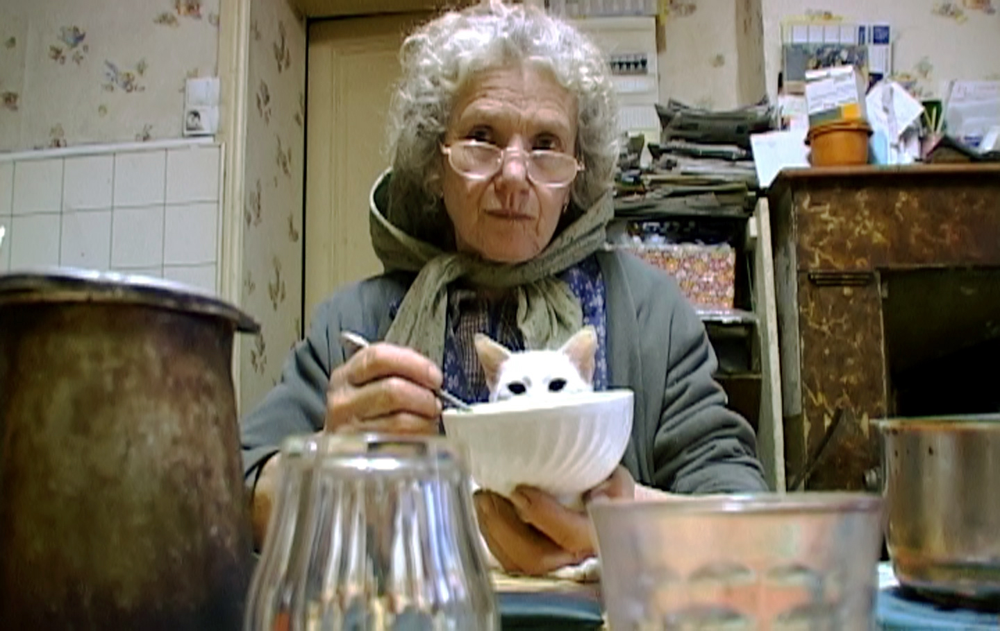
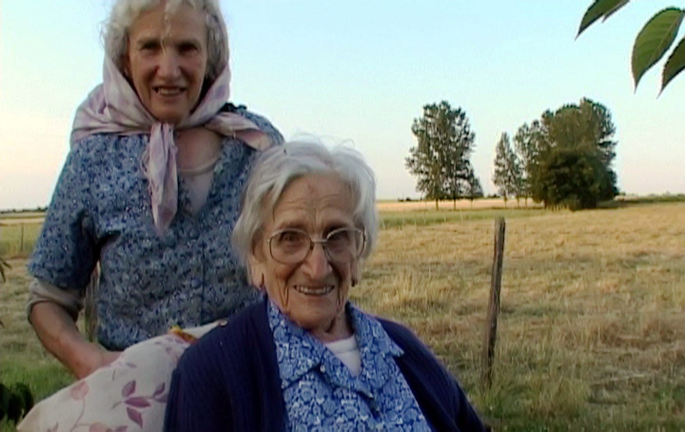
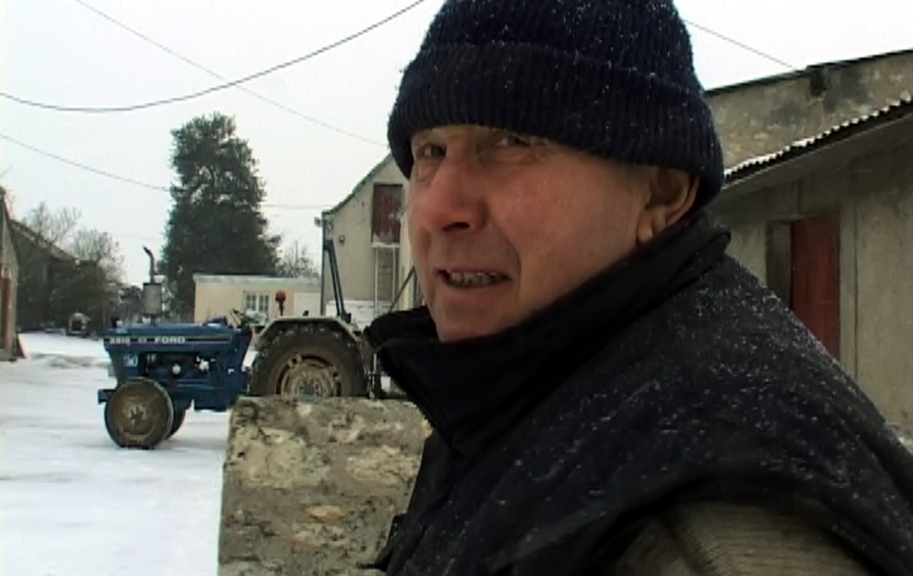
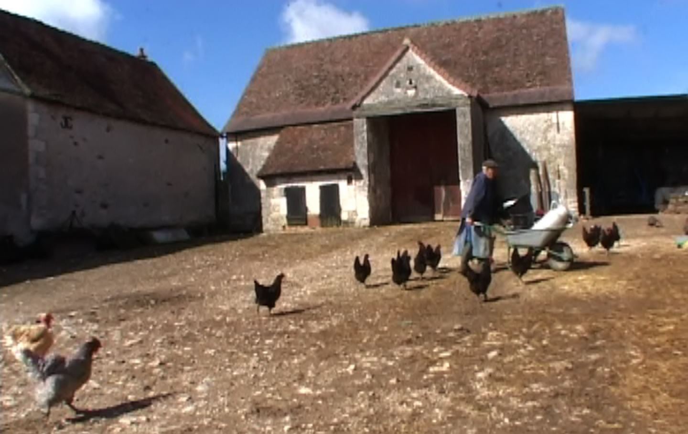
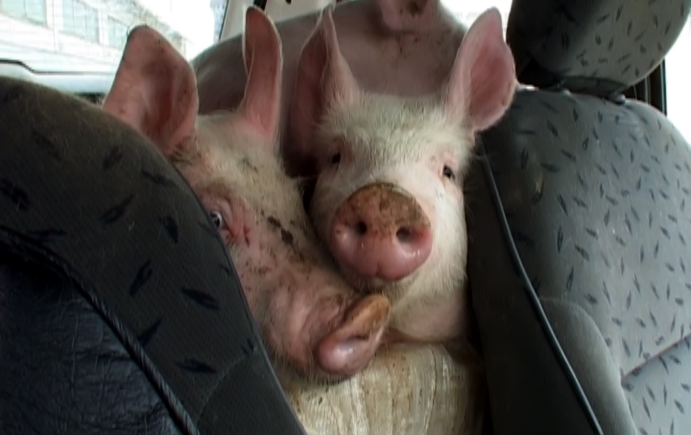

Long métrage documentaire
Yvette bon Dieu !
Yvette a 62 ans et pas une minute à elle.
Yvette est une fermière qui ressemble à celle de nos racines campagnardes, réelles ou imaginaires, souvent très éloignées de la réalité paysanne moderne. Elle nous mène à la rencontre de cette vision d’une ferme où tout est cultivé et où tous les animaux sont réunis comme dans une arche de Noé. Cette ferme, bien réelle, c’est celle d’Yvette, de sa mère centenaire et de ses deux frères. Ils vivent là depuis toujours, dans un univers où les valeurs résonnent encore au rythme des saisons.
Mais Yvette résiste au temps et regarde le monde moderne avec gourmandise.
Festivals
- Festival Jean Rouch, 27ᵉ Bilan du Film Ethnographique, musée de l’Homme (mars 2008, Paris)
- Festival de Quend du film grolandais (septembre 2008, Quend)
- Rencontres des Cinémas d’Europe (novembre 2008, Aubenas)
- Festival International du Film d’Amour de Mons (février 2009, Belgique)
- Nombreux cycles sur le monde rural
Film salué par la presse nationale ainsi que par la presse spécialisée, entre autres Télérama, Positif, Le Monde, Les Cahiers du cinéma, Marianne…
Revue de presse
« La caméra de Sylvestre Chatenay les suit, surtout Yvette qui ne s’assoit jamais, au ras de la terre nourricière, au plus près des seuls enfants qu’ils n’auront jamais, les chiens, les chats, et les bêtes qu’on tue pour les manger mais qu’on respecte. »
« Il y a du Jean Eustache, du Georges Rouquier, du Raymond Depardon dans ce documentaire ethnographique qui saisit avec acuité, honnêteté et bienveillance le quotidien d’une paysannerie en voie de disparition. [...] Ce témoignage-manifeste se double d’un majestueux portrait de femme. Impossible d’oublier Yvette, reine en tablier d’un royaume que le nouveau monde s’apprête à sacrifier. »
« Le réalisateur a bien saisi, derrière la banalité du quotidien, la réalité, le pittoresque presque, de ces derniers campagnards. Un film ethnographique édifiant. Et dépaysant. »
Images du film




Vidéo
Avec
- Yvette Trion
- Camille Trion
- René Trion
- Renée Trion
Fiche technique
- Caméra et son
- Sylvestre Chatenay
- Montage
- Pascale Chavance
- Montage son
- Pierre Choukroun
- Mixage
- Thierry Delor
- Bruitage
- Christophe Bourreau
- Musique
- Benjamin Dubost
Entretien avec Sylvestre Chatenay
- Le film donne parfois le sentiment d’une campagne fantasmée.
Pour moi, cela n’a rien de fantasmé. Je me souviens parfaitement du cri du cochon dans la ferme de mes grands-parents ou du lapin qu’on « déshabille ». En filmant ces gens, j’ai filmé d’une certaine manière la fin du monde paysan. C’est d’autant plus vrai que ceux-là n’ont pas de descendance. Yvette et ses frères, Camille et René, représentent une génération en train de s’éteindre, celle des petites exploitations, comme il y en avait partout il y a 50 ans, qui pratiquaient la polyculture-élevage et qui fonctionnaient donc quasiment en autosubsistance. C’est un modèle agricole qui a été presque totalement abandonné aujourd’hui. Pour moi, il s’agit d’une vraie cassure puisque les agriculteurs se sont désormais spécialisés et ont un rythme de vie plus proche de celui des ouvriers.
- Qu’est-ce qui vous a donné envie de parler de la campagne de cette manière ?
En découvrant la ferme où j’ai tourné, près de chez moi en Touraine, j’ai retrouvé l’atmosphère que je connaissais quand j’avais dix ans. Dans ses gestes quotidiens, Yvette m’évoquait vraiment ma grand-mère. Je me suis dit que j’avais le devoir de filmer ces gens pour qu’on ne les oublie pas. Les générations actuelles de citadins n’ont plus ce rapport à la terre que les hommes ont toujours connu. Et je crois profondément que ce lien à la terre est fondamental pour l’être humain.
- Rien ou presque dans le film n’indique l’époque à laquelle les images ont été tournées.
C’est vrai. Le film aurait pu être tourné il y a dix ou vingt ans. Les paysans que j’ai filmés sont hors du temps, tout en étant en prise avec le monde moderne. Quand je vais les voir, par exemple, ils sont très curieux de ce qui se passe à Paris, de mon métier, de mes voyages.
- Le documentaire a-t-il été scénarisé ?
Pas du tout. Pour moi, Yvette bon Dieu ! est fondé sur un principe d’« immersion » qui est aux antipodes d’un documentaire d’investigation. Cela ne signifie pas qu’il n’y ait pas de partis pris, ou de direction. J’ai passé presque deux ans dans la ferme pour capter des moments sur le vif. À l’exception du discours du maire, qui a nécessité deux prises, tout ce que l’on voit dans le film est entièrement spontané.
- Il y a une évidente dimension ethnographique...
Cela me fait d’autant plus plaisir que le film a été projeté au musée de l’Homme en mars 2008 dans le cadre du festival Jean Rouch, organisé par le Comité du Film Ethnographique ! La démarche ethnographique m’a servi de guide, même si je ne suis pas moi-même scientifique.
- Comment vous êtes-vous fait accepter d’Yvette et des autres protagonistes ?
Je connais Yvette et ses frères depuis une dizaine d’années. Au fil du temps, nous avons développé des rapports de voisinage et d’entraide qui m’ont permis de me faire accepter.
Malgré tout, quand on vient avec une caméra, les gens ne réagissent pas de la même façon qu’en temps normal. Le titre du film en est un parfait exemple : lorsque je passais à la ferme, j’entendais souvent Camille s’adresser à sa sœur en lui disant, « Yvette, bon Dieu, passe-moi la fourche » ou « Yvette, bon Dieu, où sont les poules ? » etc. En revanche, dès que la caméra était là, je n’entendais plus du tout cette phrase dans sa bouche. Tout en se montrant généreux à mon égard et en acceptant la caméra, mes « personnages » se méfiaient un peu d’elle.
- Non seulement la caméra semble invisible, mais vous intervenez très peu dans le film.
En réalité, je suis très bavard ! Au montage, nous avons supprimé presque toutes mes interventions car c’est la parole des gens que je filme qui compte. Pour autant, je leur ai posé pas mal de questions. Mais la plupart du temps, ils me répondaient par une ellipse ou rebondissaient pour parler de tout autre chose. Par exemple, malgré toute sa bienveillance à mon égard, je n’ai jamais obtenu de réponse sur le « mystère » des cheveux d’Yvette...
- Comment expliquer que ni Yvette, ni aucun de ses frères, n’ait quitté la ferme et construit une nouvelle vie ?
En fait, leur père est décédé dans les années 60. La mère s’est donc retrouvée seule du jour au lendemain et il est probable qu’elle ait demandé à ses enfants de rester auprès d’elle pour s’occuper de la ferme. En somme, il n’y a pas eu de choix. Les choses se sont toujours passées comme ça à la campagne, et personne n’a songé à remettre en question ce fonctionnement. Car, pour eux, ce qui compte, c’est le respect de la cellule familiale et une profonde fidélité au monde d’hier.
- Il y a aussi des moments très drôles, très insolites, comme lorsque Yvette évoque une fusion de deux banques en trayant ses vaches...
C’est une image qui ne me quitte pas ! Quand j’ai filmé cette scène, il était environ 8 heures du matin : Yvette venait d’entendre à la radio que le Crédit Agricole et la Banque Populaire fusionnaient, et elle en était estomaquée ! Elle a eu quelques reparties de ce style-là, qui étaient extraordinaires.
Elle aborde toutes les choses de la vie avec ce que l’on appelle « le bon sens paysan ». En général, un peu comme dans une fable de La Fontaine, elle en tire une morale !
- On a le sentiment que les chiens et les chats participent aux travaux de la ferme et jouent un « rôle » dans le film.
Il faut dire que les animaux domestiques sont des personnages à part entière dans la ferme, d’autant qu’ils remplissent une véritable fonction : les chiens aident à garder les chèvres et les chats chassent les souris. Du coup, c’est vrai, les animaux familiers sont personnifiés.
D’ailleurs, même les bêtes qui sont abattues pour être mangées sont respectées jusqu’au dernier moment : Yvette et ses frères ont toujours en tête le bien-être de leurs animaux, comme s’ils étaient sincèrement reconnaissants du fait qu’ils leur procurent de la viande.
- La caméra est souvent à hauteur du sol.
Effectivement, pendant la première moitié du film, la caméra est au niveau des mains qui travaillent, puis elle remonte pour s’intéresser au discours. Quand la caméra est près du sol, je me focalise sur les gestes et les métiers de la ferme : peu à peu, la caméra s’élève pour capter les échanges entre Yvette et ses frères ou entre Yvette et sa mère.
- Vous captez formidablement le passage du temps et le rythme des saisons.
Cela n’a pas été facile à rendre. Car, à partir du moment où Yvette assurait le fil conducteur, il fallait rester l’essentiel du temps avec elle. Alors que je voulais au départ évoquer davantage le rythme des saisons, je me suis aperçu au montage que c’était impossible : on devait se focaliser sur notre « protagoniste » pour ne pas perdre le fil de l’histoire.
- Le rythme du film s’accélère au moment de la mort de la mère...
C’est parce que cela correspond à la manière dont les choses se passent là-bas : très vite, je les ai vus reprendre le travail, comme s’il n’y avait pas de deuil.
Dans la plupart des familles, on s’habille en noir et on met un certain temps à reprendre une vie normale. Là, au contraire, les habitants de la ferme n’ont pas ce luxe. On ne s’appesantit pas sur le deuil : on reste ancré dans le monde du travail.
- Ce qui n’empêche pas Yvette de laisser poindre l’émotion.
Je l’ai surprise plusieurs fois au bord des larmes. Elle reprenait alors son travail et c’est le fait d’être dans l’action qui la sauve. Il faut bien comprendre qu’Yvette est née dans cette ferme et qu’elle a toujours vécu avec sa mère, qu’elle ne l’a jamais quittée. Pendant 63 ans, elle a partagé avec elle les mêmes lieux. Dans le film, je suis resté volontairement dans la ferme pour bien montrer qu’Yvette n’en sort pratiquement jamais, comme sa mère qui est née là un siècle plus tôt.